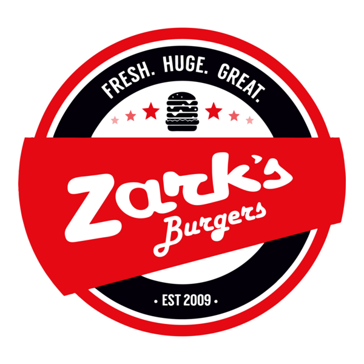
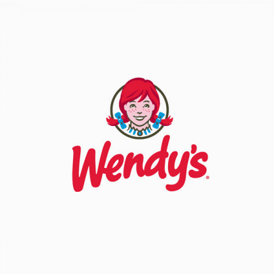

WELCOME TO THE BURGER FAN!
A Place Where Love For Burgers Are Widely Shared.
These Are My Top 3 Fast Food Restaurants With The Best Burgers
Burger King
Burger King’s burgers are best known for their smoky, and flame-grilled taste. It is always satisfying, and always hitting the spot, it’s the perfect, and the classic burger!
Zark's Burgers
Zark’s Burgers never disappoints, packed with flavors, loaded with cheese, all in an enormous piece of burger. It’s the kind of burger that fills you up perfectly during or after a tiring day!
Wendy's
Wendy’s burgers are simple, fresh, and tasty. The soft buns, the juicy patties, and the flavors, when all these factors are combined, creates a masterpiece of a burger!
ABOUT THE BURGER FAN
Hello there! I'm Mhatt Cyrus Estoril, a student in Panpacific University - Urdaneta Campusion, I'm currently in my second year in the program of Bachelor of Sciece in Information Technology.
Burgers, they are my go to snack, it's easy to eat, it's delicious, and it fills my tummy every single time. I made this webpage in order to share my love for burgers.
Other than burgers, I also have interests in tv shows, anime, video games, movies, and many more.
CONTACT ME
If you wanna yap more than about burgers, I'm always available!
You can talk to me about video games, tv shows, movies, and all the other interesting stuffs!
Email: mhattcyrus@gmail.com
Phone: +63 993 630 2733
Location: Asingan, Pangasinan, Philippines